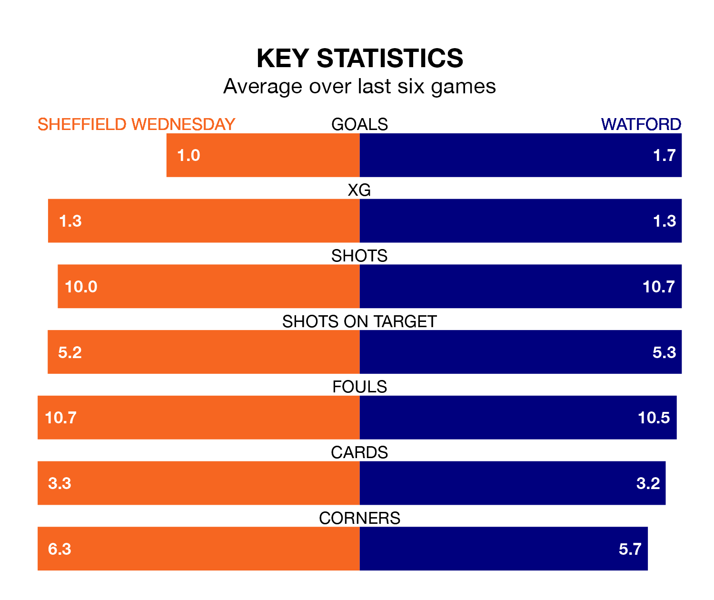

Sheffield Wednesday host Watford on Wednesday at Hillsborough in EFL Championship.
In their last league match, on January 20, Wednesday lost to Coventry City 2-1 at home, with their goal scored by Josh Windass.
Watford drew, 1-1 away at Bristol City, with Ayotomiwa Dele-Bashiru scoring their goals.
Wednesday are 23rd in the table after 28 games, of which they have won six and drawn four, earning 22 points.
Watford are 13 places ahead of the Owls in 10th, with 10 wins and 10 draws putting them on 40 points.
With 22 goals in 28 games so far this season, the hosts are the league's lowest scorers with 0.8 goals per game. And they are conceding more than average, letting in 46 goals at a rate of 1.6 per game.
The Hornets, meanwhile, are above average scorers, with 1.6 goals per game, compared to a league average of 1.4. They have conceded 1.4 goals per game.
In the last 10 years, Wednesday and Watford have played each other on six occasions. Watford won four of them and they drew twice.
On average, the Owls scored 0.3 goals and the Hornets 1.7 in those matches.
Their last meeting was on October 21, when Watford won 1-0 at home.
Wednesday are in disappointing form in EFL Championship, with two wins and four losses from their last six games.
With two wins and three draws over that period, the away side's form is better – they have taken nine points from 18, compared to Wednesday's six.
Wednesday's match will be refereed by Tom Nield, who has taken charge of six EFL Championship games so far this season, issuing no red cards and booking 24 players. He has awarded one penalty.
He is yet to oversee a match featuring either Wednesday or Watford this season.
Updated: 13:20 (UTC), 29/01/24